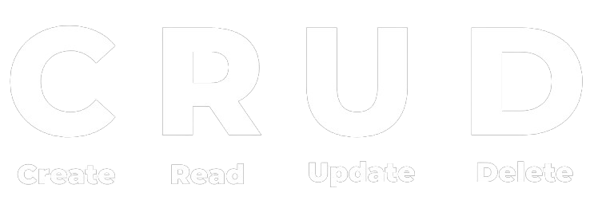

<mat-toolbar class="header">
  <div class="container">
    
    <button mat-button [matMenuTriggerFor]="menu">
      <mat-icon>menu</mat-icon>
    </button>
    <mat-menu #menu="matMenu">
      <button mat-menu-item>About</button>
      <button mat-menu-item>Contat</button>
    </mat-menu>
  </div>
</mat-toolbar>
